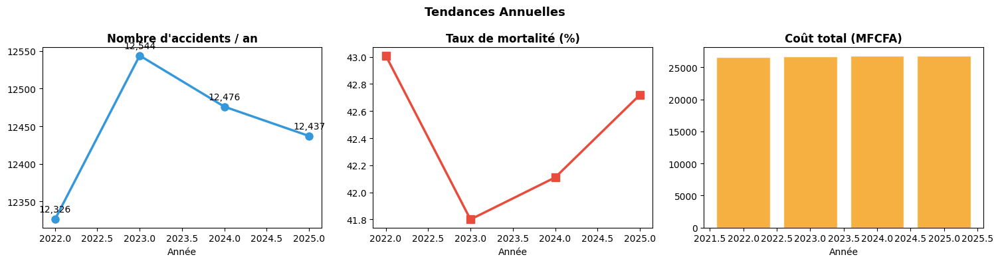
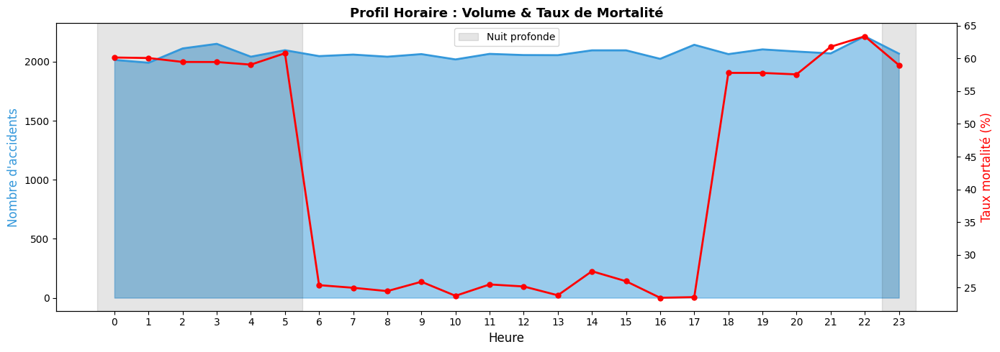
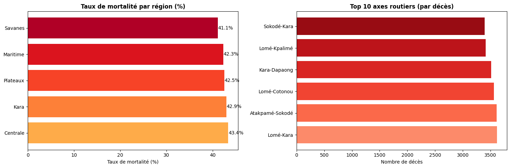
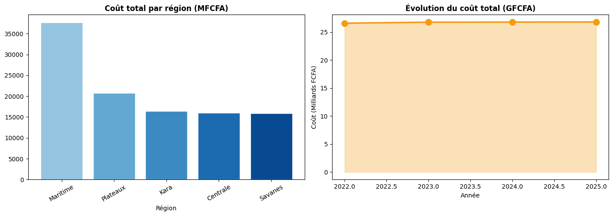

04 — Analyse SQL avec DuckDB#
Objectif : Analyses métier avancées via SQL (DuckDB en mémoire sur DataFrame Pandas).
Requêtes : KPIs, tendances, top zones, causes, analyses économiques, window functions.
import sys
sys.path.insert(0, '../src')
import pandas as pd
import numpy as np
import matplotlib.pyplot as plt
import seaborn as sns
import plotly.express as px
import duckdb
from pathlib import Path
import warnings
warnings.filterwarnings('ignore')
from sql_queries import AccidentsDB, AccidentsQueries, export_sql_report
from utils import load_dataframe, GRAVITE_COLORS, PALETTE
TABLES_DIR = Path('../reports/tables')
FIGURES_DIR = Path('../reports/figures')
TABLES_DIR.mkdir(parents=True, exist_ok=True)
df = load_dataframe('../data/processed/accidents_clean.parquet')
db = AccidentsDB(df)
q = AccidentsQueries(db)
print('DuckDB prêt ')
2026-05-21 19:28:11 | INFO | utils | DataFrame chargé ← ..\data\processed\accidents_clean.parquet (49,783 lignes)
2026-05-21 19:28:11 | INFO | sql_queries | DuckDB initialisé avec 49,783 accidents.
DuckDB prêt ✓
1. KPIs Globaux#
kpis = q.kpi_globaux()
kpis = kpis.T
kpis.columns = ['Valeur']
kpis.index.name = 'Indicateur'
print('═' * 50)
print('KPIs GLOBAUX — Togo Road Accidents 2022-2025')
print('═' * 50)
display(kpis)
kpis.to_csv(TABLES_DIR / '04_kpis_globaux.csv', encoding='utf-8-sig')
══════════════════════════════════════════════════
KPIs GLOBAUX — Togo Road Accidents 2022-2025
══════════════════════════════════════════════════
| Valeur | |
|---|---|
| Indicateur | |
| total_accidents | 49783 |
| total_deces | 21112.0 |
| total_victimes | 109036.0 |
| moy_victimes_par_accident | 2.19 |
| taux_mortalite_pct | 42.41 |
| cout_moyen_MFCFA | 2.147 |
| cout_total_GFCFA | 106.861503 |
| date_debut | 2022-01-01 00:00:00 |
| date_fin | 2025-12-31 00:00:00 |
| nb_regions | 5 |
| nb_villes | 12 |
| nb_axes_routiers | 6 |
2. Distribution par Gravité#
grav_df = q.repartition_par_gravite()
print(grav_df.to_string(index=False))
grav_df.to_csv(TABLES_DIR / '04_gravite.csv', index=False, encoding='utf-8-sig')
gravite nb_accidents pct total_victimes total_deces cout_moyen_FCFA
Mortel 9885 19.86 34640.0 19149.0 5223912.0
Grave 13260 26.64 33790.0 1963.0 2252077.0
Léger 26638 53.51 40606.0 0.0 952046.0
3. Analyse Temporelle#
# Tendance annuelle
annual = q.tendance_annuelle()
print('Évolution annuelle :')
print(annual.to_string(index=False))
fig, axes = plt.subplots(1, 3, figsize=(15, 4))
axes[0].plot(annual['annee'], annual['nb_accidents'], 'o-', color=PALETTE['secondary'], linewidth=2.5, markersize=8)
axes[0].set_title('Nombre d\'accidents / an', fontweight='bold')
axes[0].set_xlabel('Année')
for x, y in zip(annual['annee'], annual['nb_accidents']):
axes[0].annotate(f'{y:,}', (x, y), textcoords='offset points', xytext=(0, 8), ha='center')
axes[1].plot(annual['annee'], annual['taux_mortalite'], 's-', color=PALETTE['danger'], linewidth=2.5, markersize=8)
axes[1].set_title('Taux de mortalité (%)', fontweight='bold')
axes[1].set_xlabel('Année')
axes[2].bar(annual['annee'], annual['cout_total_MFCFA'], color=PALETTE['warning'], alpha=0.8, edgecolor='white')
axes[2].set_title('Coût total (MFCFA)', fontweight='bold')
axes[2].set_xlabel('Année')
plt.suptitle('Tendances Annuelles', fontsize=13, fontweight='bold')
plt.tight_layout()
plt.savefig(FIGURES_DIR / '04_tendances_annuelles.png', dpi=150, bbox_inches='tight')
plt.show()
Évolution annuelle :
annee nb_accidents deces taux_mortalite vitesse_moyenne cout_total_MFCFA
2022 12326 5301.0 43.01 64.4 26564.5
2023 12544 5244.0 41.80 63.7 26743.8
2024 12476 5254.0 42.11 64.6 26769.3
2025 12437 5313.0 42.72 64.5 26783.9

# Distribution par heure
hourly = q.accidents_par_heure()
fig, ax1 = plt.subplots(figsize=(14, 5))
ax1.fill_between(hourly['heure'], hourly['nb_accidents'], alpha=0.5, color=PALETTE['secondary'])
ax1.plot(hourly['heure'], hourly['nb_accidents'], color=PALETTE['secondary'], linewidth=2)
ax1.set_xlabel('Heure', fontsize=12)
ax1.set_ylabel('Nombre d\'accidents', color=PALETTE['secondary'], fontsize=12)
ax1.set_xticks(range(24))
ax2 = ax1.twinx()
ax2.plot(hourly['heure'], hourly['taux_mortalite'], 'ro-', linewidth=2, markersize=5)
ax2.set_ylabel('Taux mortalité (%)', color='red', fontsize=12)
# Zones de risque
ax1.axvspan(22.5, 23.5, alpha=0.1, color='black')
ax1.axvspan(-0.5, 5.5, alpha=0.1, color='black', label='Nuit profonde')
ax1.legend()
plt.title('Profil Horaire : Volume & Taux de Mortalité', fontsize=13, fontweight='bold')
plt.tight_layout()
plt.savefig(FIGURES_DIR / '04_profil_horaire_sql.png', dpi=150, bbox_inches='tight')
plt.show()

# Cumul glissant des décès
running = q.running_total_deces_par_annee()
fig = px.line(
running, x='mois', y='deces_cumul', color='annee',
title='Cumul des Décès par Mois (par année)',
labels={'mois': 'Mois', 'deces_cumul': 'Décès cumulés', 'annee': 'Année'},
markers=True
)
fig.update_layout(height=400)
fig.show()
4. Top Zones Dangereuses#
top_regions = q.top_regions_risque(n=5)
print('TOP 5 RÉGIONS À RISQUE :')
display(top_regions)
top_axes = q.top_axes_dangereux(n=10)
print('\nTOP 10 AXES ROUTIERS DANGEREUX :')
display(top_axes)
# Visualisation
fig, axes = plt.subplots(1, 2, figsize=(15, 5))
# Régions
axes[0].barh(top_regions['region'], top_regions['taux_mortalite'],
color=plt.cm.YlOrRd(np.linspace(0.4, 0.9, len(top_regions))))
axes[0].set_title('Taux de mortalité par région (%)', fontweight='bold')
axes[0].set_xlabel('Taux de mortalité (%)')
for i, (_, row) in enumerate(top_regions.iterrows()):
axes[0].text(row['taux_mortalite'] + 0.05, i, f"{row['taux_mortalite']:.1f}%", va='center')
# Axes routiers
top10_axes = top_axes.head(10)
axes[1].barh(top10_axes['axe_routier'], top10_axes['deces'],
color=plt.cm.Reds(np.linspace(0.4, 0.9, len(top10_axes))))
axes[1].set_title('Top 10 axes routiers (par décès)', fontweight='bold')
axes[1].set_xlabel('Nombre de décès')
plt.tight_layout()
plt.savefig(FIGURES_DIR / '04_top_zones.png', dpi=150, bbox_inches='tight')
plt.show()
top_regions.to_csv(TABLES_DIR / '04_top_regions.csv', index=False, encoding='utf-8-sig')
top_axes.to_csv(TABLES_DIR / '04_top_axes.csv', index=False, encoding='utf-8-sig')
TOP 5 RÉGIONS À RISQUE :
| region | nb_accidents | deces | victimes | taux_mortalite | vitesse_moy | cout_total_MFCFA | pct_accidents | |
|---|---|---|---|---|---|---|---|---|
| 0 | Centrale | 7343 | 3183.0 | 16034.0 | 43.35 | 64.6 | 16016.1 | 14.75 |
| 1 | Kara | 7508 | 3223.0 | 16508.0 | 42.93 | 65.0 | 16429.6 | 15.08 |
| 2 | Plateaux | 9823 | 4176.0 | 21537.0 | 42.51 | 64.0 | 20806.2 | 19.73 |
| 3 | Maritime | 17510 | 7405.0 | 38346.0 | 42.29 | 64.2 | 37714.2 | 35.17 |
| 4 | Savanes | 7599 | 3125.0 | 16611.0 | 41.12 | 63.8 | 15895.4 | 15.26 |
TOP 10 AXES ROUTIERS DANGEREUX :
| axe_routier | nb_accidents | deces | taux_mortalite | vitesse_moy | nb_villes_touchees | |
|---|---|---|---|---|---|---|
| 0 | Lomé-Kara | 8357 | 3617.0 | 43.28 | 64.5 | 12 |
| 1 | Atakpamé-Sokodé | 8443 | 3611.0 | 42.77 | 64.3 | 12 |
| 2 | Lomé-Cotonou | 8362 | 3560.0 | 42.57 | 64.0 | 12 |
| 3 | Kara-Dapaong | 8226 | 3511.0 | 42.68 | 64.5 | 12 |
| 4 | Lomé-Kpalimé | 8257 | 3416.0 | 41.37 | 64.1 | 12 |
| 5 | Sokodé-Kara | 8138 | 3397.0 | 41.74 | 64.3 | 12 |

5. Analyse des Causes et de la Vitesse#
vitesse_stats = q.analyse_vitesse()
print('Statistiques de vitesse par gravité et type de route :')
display(vitesse_stats)
# Corrélation excès vitesse × gravité
exces_grav = q.correlation_vitesse_gravite()
print('\nExcès de vitesse par niveau de gravité :')
display(exces_grav)
Statistiques de vitesse par gravité et type de route :
| gravite | type_route | vitesse_moy | vitesse_mediane | vitesse_std | exces_moy | limitation_moy | nb_accidents | |
|---|---|---|---|---|---|---|---|---|
| 0 | Grave | Autoroute | 100.7 | 98.0 | 17.3 | -9.3 | 110.0 | 1319 |
| 1 | Grave | Interurbaine | 65.8 | 64.0 | 16.7 | -4.2 | 70.0 | 1947 |
| 2 | Grave | Nationale | 84.3 | 84.0 | 16.2 | -5.7 | 90.0 | 3831 |
| 3 | Grave | Rurale | 47.5 | 46.0 | 21.4 | -2.5 | 50.0 | 2462 |
| 4 | Grave | Urbaine | 47.5 | 46.0 | 20.8 | -2.5 | 50.0 | 3701 |
| 5 | Léger | Autoroute | 85.7 | 86.0 | 11.8 | -24.3 | 110.0 | 455 |
| 6 | Léger | Interurbaine | 64.1 | 64.0 | 18.8 | -5.9 | 70.0 | 4756 |
| 7 | Léger | Nationale | 76.6 | 75.0 | 16.7 | -13.4 | 90.0 | 4658 |
| 8 | Léger | Rurale | 47.3 | 46.0 | 19.4 | -2.7 | 50.0 | 6700 |
| 9 | Léger | Urbaine | 47.0 | 46.0 | 18.0 | -3.0 | 50.0 | 10069 |
| 10 | Mortel | Autoroute | 104.9 | 104.0 | 15.0 | -5.1 | 110.0 | 3084 |
| 11 | Mortel | Interurbaine | 70.2 | 69.0 | 18.4 | 0.2 | 70.0 | 860 |
| 12 | Mortel | Nationale | 91.0 | 89.0 | 15.4 | 1.0 | 90.0 | 3857 |
| 13 | Mortel | Rurale | 46.2 | 45.0 | 19.4 | -3.8 | 50.0 | 865 |
| 14 | Mortel | Urbaine | 46.9 | 45.0 | 21.5 | -3.1 | 50.0 | 1219 |
Excès de vitesse par niveau de gravité :
| gravite | exces_moy | q25 | mediane | q75 | p90 | n | |
|---|---|---|---|---|---|---|---|
| 0 | Mortel | -1.89 | -10.0 | -3.0 | 5.0 | 14.0 | 9885 |
| 1 | Grave | -4.34 | -14.0 | -6.0 | 3.0 | 11.0 | 13260 |
| 2 | Léger | -5.60 | -15.0 | -7.0 | 2.0 | 9.0 | 26638 |
# Pivot causes × gravité
try:
pivot_causes = q.pivot_causes_gravite()
print('Pivot causes × gravité :')
display(pivot_causes)
pivot_causes.to_csv(TABLES_DIR / '04_pivot_causes_gravite.csv', index=False, encoding='utf-8-sig')
except Exception as e:
print(f'PIVOT non supporté dans cette version DuckDB : {e}')
# Alternative
pivot_causes = q.causes_par_gravite().pivot_table(
index='cause', columns='gravite', values='nb_accidents', fill_value=0
)
display(pivot_causes)
Pivot causes × gravité :
| cause | Grave | Léger | Mortel | |
|---|---|---|---|---|
| 0 | Excès de vitesse | 2256.0 | 4228.0 | 1740.0 |
| 1 | Alcool | 1841.0 | 2789.0 | 1564.0 |
| 2 | Fatigue | 1815.0 | 2915.0 | 1533.0 |
| 3 | Mauvais état route | 1797.0 | 3826.0 | 1298.0 |
| 4 | Défaillance mécanique | 1750.0 | 3914.0 | 1270.0 |
| 5 | Téléphone | 1246.0 | 2895.0 | 750.0 |
| 6 | Dépassement dangereux | 795.0 | 1572.0 | 703.0 |
| 7 | Sortie de route | 946.0 | 2361.0 | 634.0 |
| 8 | Inconnue | 394.0 | 759.0 | 285.0 |
| 9 | Collision piéton | 420.0 | 1379.0 | 108.0 |
6. Analyse Économique#
cout_region = q.cout_par_region()
cout_cause = q.cout_par_cause()
cout_annuel = q.evolution_cout_annuel()
print('Coût par région :')
display(cout_region)
print('\nCoût par cause :')
display(cout_cause)
fig, axes = plt.subplots(1, 2, figsize=(14, 5))
# Coût par région
axes[0].bar(cout_region['region'], cout_region['cout_total_MFCFA'],
color=plt.cm.Blues(np.linspace(0.4, 0.9, len(cout_region))),
edgecolor='white')
axes[0].set_title('Coût total par région (MFCFA)', fontweight='bold')
axes[0].set_xlabel('Région')
axes[0].tick_params(axis='x', rotation=30)
# Évolution coût annuel
axes[1].plot(cout_annuel['annee'], cout_annuel['cout_total_GFCFA'], 'o-',
color=PALETTE['warning'], linewidth=2.5, markersize=10)
axes[1].fill_between(cout_annuel['annee'], cout_annuel['cout_total_GFCFA'],
alpha=0.3, color=PALETTE['warning'])
axes[1].set_title('Évolution du coût total (GFCFA)', fontweight='bold')
axes[1].set_xlabel('Année')
axes[1].set_ylabel('Coût (Milliards FCFA)')
plt.tight_layout()
plt.savefig(FIGURES_DIR / '04_analyse_economique.png', dpi=150, bbox_inches='tight')
plt.show()
Coût par région :
| region | nb_accidents | cout_total_MFCFA | cout_moyen_FCFA | cout_max_FCFA | cout_median_FCFA | |
|---|---|---|---|---|---|---|
| 0 | Maritime | 17510 | 37714.2 | 2153865.0 | 20230612.0 | 1147821.0 |
| 1 | Plateaux | 9823 | 20806.2 | 2118111.0 | 20230612.0 | 1125058.0 |
| 2 | Kara | 7508 | 16429.6 | 2188277.0 | 20230612.0 | 1132737.0 |
| 3 | Centrale | 7343 | 16016.1 | 2181140.0 | 20230612.0 | 1169829.0 |
| 4 | Savanes | 7599 | 15895.4 | 2091780.0 | 20230612.0 | 1112718.0 |
Coût par cause :
| cause | nb_accidents | cout_total_MFCFA | cout_moyen | taux_mortalite | |
|---|---|---|---|---|---|
| 0 | Excès de vitesse | 8224 | 17207.26 | 2092322.0 | 44.11 |
| 1 | Mauvais état route | 6921 | 15186.38 | 2194247.0 | 40.82 |
| 2 | Défaillance mécanique | 6934 | 14923.42 | 2152210.0 | 39.04 |
| 3 | Fatigue | 6263 | 14860.06 | 2372674.0 | 51.78 |
| 4 | Alcool | 6194 | 14684.44 | 2370753.0 | 53.92 |
| 5 | Téléphone | 4891 | 9368.20 | 1915397.0 | 33.59 |
| 6 | Sortie de route | 3941 | 8058.06 | 2044674.0 | 34.94 |
| 7 | Dépassement dangereux | 3070 | 7154.44 | 2330438.0 | 48.40 |
| 8 | Inconnue | 1438 | 3072.52 | 2136664.0 | 41.03 |
| 9 | Collision piéton | 1907 | 2346.70 | 1230572.0 | 14.32 |

7. Export du rapport complet#
export_sql_report(df, TABLES_DIR)
db.close()
print('Rapport SQL exporté dans reports/tables/')
print('Prochaine étape : notebook 05_folium_map.ipynb')
2026-05-21 19:28:24 | INFO | sql_queries | DuckDB initialisé avec 49,783 accidents.
2026-05-21 19:28:24 | INFO | sql_queries | Exporté : kpi_globaux.csv
2026-05-21 19:28:24 | INFO | sql_queries | Exporté : gravite.csv
2026-05-21 19:28:24 | INFO | sql_queries | Exporté : tendance_annuelle.csv
2026-05-21 19:28:24 | INFO | sql_queries | Exporté : accidents_par_heure.csv
2026-05-21 19:28:24 | INFO | sql_queries | Exporté : top_regions.csv
2026-05-21 19:28:24 | INFO | sql_queries | Exporté : top_axes.csv
2026-05-21 19:28:24 | INFO | sql_queries | Exporté : causes_gravite.csv
2026-05-21 19:28:24 | INFO | sql_queries | Exporté : analyse_vitesse.csv
2026-05-21 19:28:24 | INFO | sql_queries | Exporté : impact_epi.csv
2026-05-21 19:28:24 | INFO | sql_queries | Exporté : cout_region.csv
2026-05-21 19:28:24 | INFO | sql_queries | Exporté : risque_vehicule.csv
2026-05-21 19:28:24 | INFO | sql_queries | Rapport SQL exporté dans ..\reports\tables
✓ Rapport SQL exporté dans reports/tables/
→ Prochaine étape : notebook 05_folium_map.ipynb